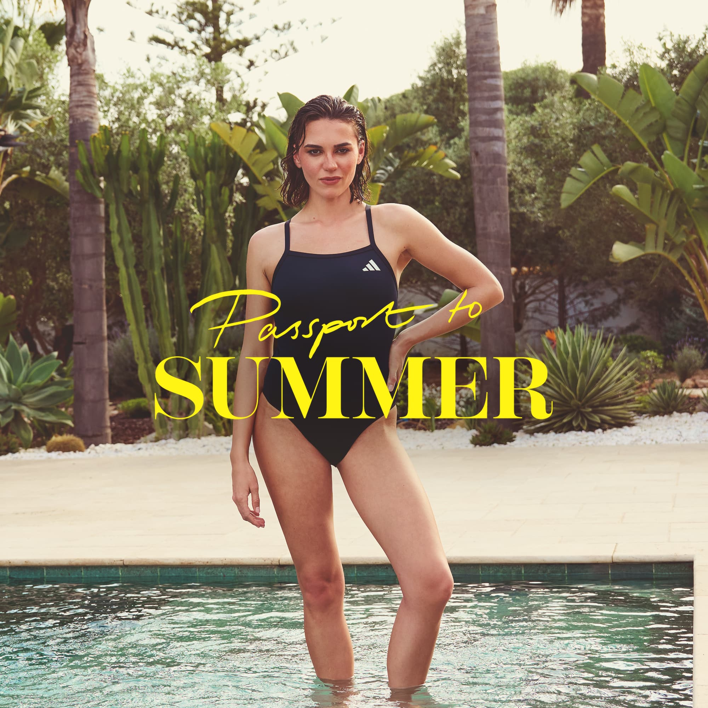

Passport to Summer aimed to position Freemans as the one-stop destination for summer — from wedding guest outfits and countryside escapes to holidays abroad. Working as part of our campaigns creative team, I helped develop the campaign's visual direction and bring it to life across landing pages, onsite, CRM and social, creating a cohesive experience across every digital touchpoint.
